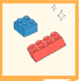

1. Shkruaj recetën e dy ushqimeve që të pëlqejnë, një ushqim tradicional dhe
një nga kultura të tjera.
një nga kultura të tjera.
a) Shkëmbeni në klasë recetat me njëri-tjetrin!
2. Plotësoje fjalëkryqin.
1. Ushqimi kryesor në tryezën e Kosovës, i përgatitur nga mielli.
2. Speca e perime të tjera të konservuara me ujë e kripë.
3. Lëng i bardhë, që merret nga gjiri i disa kafshëve shtëpiake dhe që përdoret nga njeriu si ushqim me vlerë të madhe.
4. Brumë që piqet në rende me saç.
5. Diçka që merret nga kafshët dhe përdoret nga ne si ushqim. Zihet ose fërgohet.
6. Vendi ku përgatitet ushqimi.
3. Në kolonën me ngjyrë zbulove një fjalë. Shkruaj për rëndësinë e asaj gjëje.
37